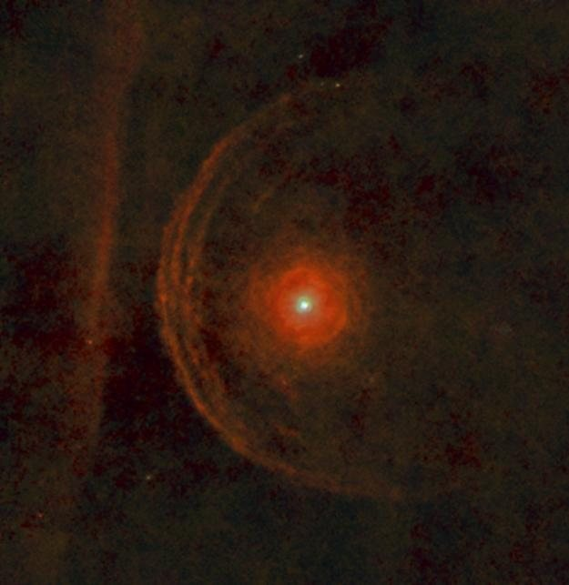

Ερυθροί γίγαντες
Όταν ένα άστρο σαν τον Ήλιο εξαντλήσει το υδρογόνο στον πυρήνα του, διογκώνεται και γίνεται ερυθρός γίγαντας. Ο Ήλιος θα φτάσει σε αυτή τη φάση σε περίπου 5 δισεκατομμύρια χρόνια, καταπίνοντας πιθανώς τον Ερμή και την Αφροδίτη.